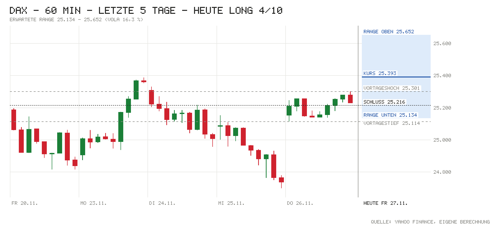

Tagesentscheidung ab 09:05 bis 17:30 Uhr
Den Ausschlag geben die kräftig steigenden US-Futures (Nasdaq +2,27 %, S&P +1,66 % seit dem Schluss am Mittwoch), die Rally in China nach der Stützungszusage des Staatsrats (CSI 300 +4,17 %) und ein Tag ohne großes Ereignisrisiko. Heute öffnet auch die Wall Street wieder, wenn auch nur verkürzt. Wichtigstes Gegenargument: Der große Trend ist Bear, die Renditen steigen weiter (US 10J +6 Bp.), und die Indikation von +0,70 % nimmt einen Teil der guten Vorgaben schon vorweg. Darum nur 4/10 (eigene Einschätzung).
- Kurs um 09:05
- 25.393
- Erwartete Range
- 25.134 – 25.652
- Eingepreist (Tagesoption)
- ±1,03 %
Einschätzung vom Kurs um 09:05 (Median der Indikationen L&S, J.P. Morgan, UBS) bis zum Xetra-Schluss. Range = ±1 σ für die restliche Handelszeit aus der DAX-Tagesoption (ca. 68 %). Keine Anlageberatung.
Chart

Signale
| Signal | Wirkung | Stand und Einordnung |
|---|---|---|
| Vorgaben USA | Rückenwind | Letzter Kassaschluss (Mi.): S&P 500 −0,25 %, Nasdaq 100 −0,64 %. Futures seither S&P +1,66 %, Nasdaq +2,27 %, Dow +1,05 %. Heute verkürzter Handel nach Thanksgiving. |
| Eröffnung & erste Minuten | Neutral | Indikation 25.393 (+0,70 % zum Xetra-Schluss 25.215,52), X-DAX eine Stunde vorher 25.345 (dpa-AFX). Eröffnung und Hoch/Tief zum Abruf n/v. Moderate Lücke nach +2,08 % gestern. |
| Asien & China | Rückenwind | Nikkei +2,11 %, Shanghai +3,73 %, CSI 300 +4,17 %, Hang Seng +1,98 %. Chinas Staatsrat sagte stärkere Marktstützung zu; Chipwerte dort über +16 %. |
| Datenüberraschungen | Neutral | USA (Mi.): BIP 4,3 % vs. Prognose 3,4 %, Erstanträge 189K vs. 201K, Kern-PCE 3,3 % J/J vs. 3,2 %. Starkes Wachstum, aber zinstreibend. Deutsche Daten heute früh n/v. |
| Zinserwartung | Gegenwind | Fed 09.12.: 99 % für +25 Bp., Januar 65 %, März 66 % für weitere Erhöhungen. EZB-Protokoll bestätigt Straffungsneigung (ING). |
| Renditen | Gegenwind | Bund 10J 3,28 % (+2 Bp.), US 10J 4,91 % live (+6 Bp. zum offiziellen Schluss 4,85 %). Steigende Renditen bremsen Bewertungen. |
| Kreditstress | Rückenwind | FRED n/v; Ersatz: HYG +0,12 %, LQD +0,48 % (Mi.). Kein Kreditstress. |
| Öl & Dollar | Neutral | Brent 92,56 USD (gegenüber gestern 90,61 fester; Yahoo-Veränderung −2,17 % enthält Kontraktwechsel), EUR/USD 1,0977 (+0,06 %). Öl leicht belastend, Dollar ruhig. |
| Trend | Gegenwind | DAX unter 21-Tage- (25.905) und 50-Tage-Schnitt (25.575), über dem 200-Tage-Schnitt (25.001). Großer Trend Bear seit 17.11. – passt nicht zur Long-Richtung. |
| Positionierung | Neutral | COT 17.11.: Hedgefonds im S&P-Future netto −234.978 (+68.082), Asset Manager netto long 895.049. Kein Extrem, Eindeckungspotenzial vorhanden. |
| Unternehmensnachrichten | Neutral | SAP erwägt laut Bloomberg/Handelsblatt Abbau von mindestens 10.000 Stellen und meldet einen IT-Vorfall; Rheinmetall nach Kapitalmarkttag gefragt. |
| Profi-Sicht | Neutral | ING THINK: Risikoappetit kehrt zurück, aber Fed-Straffung wird wieder eingepreist; EUR/USD bleibt in 1,09–1,11. |
| Termine bis 17:30 | Neutral | Inflation Frankreich und Spanien (vorläufig November), EZB-Redner (Lane, Nagel u. a.), US-Börsen verkürzt. Kein großes Ereignis; S&P-Rating für Frankreich erst nach Börsenschluss. |
Großer Trend (3-Monats-Momentum)
- Stand
- Bear
- Seit
- 17.11. (7 Wechsel in 3 Monaten)
- Schluss 26.11.
- −3,97 % vs. Zins +0,61 %
- Heute dreht es bei Schluss über
- 26.130 (vom Kurs 25.393 aus +2,9 %)
Auch mit dem Kurs von jetzt bliebe das Signal Bear; eine Wende heute würde einen weiteren Sprung um fast 3 % erfordern. Bull = Rendite der letzten 3 Monate über dem Geldmarktzins, Bear = darunter. Regel: Rendite der letzten 63 Handelstage (≈ 3 Monate) gegen den EZB-Einlagensatz, jeden Tag zum Schluss neu entschieden, Zeitrahmen Tageskerzen (nach Antonacci 2014, dort monatlich über 12 Monate; täglich entschieden dreht es öfter falsch). Keine Anlageberatung.
Bilanz von gestern
26.11.: Long 3/10 – Richtung richtig, +61 Punkte (Kurs zur Notiz 25.155, Schluss 25.216, Hoch 25.301, Tief 25.114). Range ±320 getroffen (Bewegung +61); bisher 53 % von 17 Tagen getroffen (Soll ca. 68 %). Gesamt seit Start: 17 Einschätzungen, Richtung richtig 41 %, Summe −545 Punkte bis Schluss (Schnitt −32).
Marktlage
| Markt | Stand | Veränderung |
|---|---|---|
| DAX (Schluss 26.11.) | 25.215,52 | +2,08 % |
| DAX (Eröffnung heute) | n/v | n/v |
| DAX (jetzt, Kurs zur Notiz 09:05) | 25.393 | +0,70 % |
| S&P 500 (Schluss 25.11.) | 7.182,78 | −0,25 % |
| Nasdaq 100 (Schluss 25.11.) | 26.046,90 | −0,64 % |
| Dow Jones (Schluss 25.11.) | 50.182,95 | +0,33 % |
| US-Futures (S&P / Nasdaq) | 7.315,00 / 26.693,00 | +1,66 % / +2,27 % |
| Nikkei 225 | Eröffnung 57.669,79 → Schluss 58.711,11 | +2,11 % |
| Shanghai Composite | Eröffnung 3.482,38 → Schluss 3.606,49 | +3,73 % |
| CSI 300 | Eröffnung 3.909,08 → Schluss 4.063,06 | +4,17 % |
| Hang Seng | Eröffnung 22.263,70 → aktuell 22.667,66 | +1,98 % |
| EUR/USD | 1,0977 | +0,06 % |
| Brent (USD/Barrel) | 92,56 | gestern 90,61 (Yahoo: −2,17 % vs. 25.11., Kontraktwechsel) |
| Gold (USD/Unze) | 3.693,40 | +4,46 % vs. 25.11. |
| VIX (Schluss 26.11.) | 26,80 | −5,27 % |
China: Der Staatsrat unter Premier Li Qiang forderte eine größere Rolle der staatlichen „Nationalmannschaft“ zur Marktstabilisierung; Chip- und Techwerte führten die Rally an. US-Börsen waren gestern wegen Thanksgiving geschlossen, heute verkürzter Handel; die US-Futures vergleichen daher mit dem Schluss vom Mittwoch. Farben bei Brent und VIX nach Wirkung auf Aktien. Die DAX-Eröffnung lag zum Datenabruf (Yahoo, bis 15 min verzögert) noch nicht vor.
Anleihen & Zinsen
| Markt | Stand | Veränderung |
|---|---|---|
| Bund 2J | 3,08 % | +2 Bp. (vs. Bundesbank 26.11.: 3,06 %) |
| Bund 10J | 3,28 % | +2 Bp. (Vortagesschluss 3,26 %) |
| US-Treasury 2J | 4,68 % (live) | +7 Bp. (offiziell 25.11.: 4,61 %) |
| US-Treasury 10J | 4,91 % (live) | +6 Bp. (offiziell 25.11.: 4,85 %); 1 Woche (offiziell): −22 Bp. |
| Fed, Sitzung 09.12. | Erhöhung um 25 Bp. erwartet | 99 %; Jan. 65 %, März 66 % |
| EZB-Einlagensatz | 2,50 % | zuletzt +25 Bp. (16.09.) |
| Euro-Hochzins-Aufschlag | n/v (FRED) | n/v |
| US-Hochzins (Ersatz: HYG) | 76,52 USD | +0,12 % (Tag, 25.11.) |
Bund und US live: CNBC; 2J gegen Bundesbank- bzw. offiziellen Treasury-Vortageswert. US-1-Wochen-Vergleich aus der offiziellen Treasury-Kurve (25.11.: 4,85 % vs. 5,07 %).
Termine heute
- Frankreich und Spanien: Verbraucherpreise November (vorläufig) – laut ING etwas niedriger erwartet, aber erhöht; Uhrzeit und Prognose n/v
- EZB: Verbraucherumfrage zu Inflationserwartungen; Reden von Lane, Vujčić, Nagel, Moulin
- Italien: Anleiheauktionen (BTP 5J/10J, CCTeu) bis 8 Mrd. Euro
- USA: Börsen nach Thanksgiving mit verkürztem Handel; „Black Friday“ als Stimmungstest für den Konsum
- Nach Börsenschluss: S&P überprüft das Rating Frankreichs
- Wirtschaftskalender (Nasdaq) zum Abruf nicht verfügbar; keine Quartalszahlen von DAX-Werten bekannt.
Nachrichten zu DAX-Werten
- SAP: Laut Bloomberg und Handelsblatt erwägt SAP, im Zuge des KI-Umbaus mindestens 10.000 Stellen (rund 9 % der Belegschaft) zu streichen; SAP bestätigt keine Zahl. Zudem meldete der Konzern „verdächtige Aktivitäten“ in der IT, Hinweise auf Zugriff auf Kundendaten gibt es bislang nicht. Einschätzung: Kostensenkung eher positiv, der IT-Vorfall ein Unsicherheitsfaktor.
- Rheinmetall: Laut dpa-AFX nach dem Kapitalmarkttag mit neuen Mittelfristzielen weiter gefragt. Einschätzung: positiv.
- Tech- und Chipwerte (Infineon, SAP): Fokus seit der Führungskrise bei Nvidia; Nasdaq-Futures +2,27 % und Chinas Chip-Rally stützen. Einschätzung: positiv für heute (eigene Einschätzung).
- Auto- und Rohstoffwerte: Nach starkem Abtauchen kleine Erholung (dpa-AFX); China-Stützung hilft. Handelsblatt: Anzeichen, dass US-Zölle auf EU-Waren milder ausfallen könnten. Einschätzung: leicht positiv.
Profi-Sicht & Positionierung
- ING THINK: FX Daily: Green Friday – der Risikoappetit kehrt zurück, aber die Aktienerholung bedeute keine breiten Dollarverluste, weil wieder mehr Fed-Straffung eingepreist wird; EUR/USD bleibt bis zu den Dezember-Notenbanksitzungen in 1,09–1,11. Rates Spark: Euro-Renditen trotzen dem Aufwärtsdruck aus EZB-Straffungsneigung und Energie; Frankreich droht ein negativer Ausblick von S&P.
- Positionierung (COT, Stand 17.11.): Hedgefonds bauen Shorts im S&P-Future ab (netto −234.978, +68.082), erhöhen Shorts in 10J-Treasuries (netto −2,48 Mio., −181.116). Beim Euro kaum Veränderung (netto −76.587).
Quellen
- Marktdaten der Skripte: Amber Terminal/Yahoo Finance (Kurse, Futures), onvista (Indikationen L&S, J.P. Morgan, UBS; VDAX), Eurex (DAX-Tagesoption ODAP), CNBC (Bund- und US-Kurve), Bundesbank, US-Treasury, EZB-Datenbank, Nasdaq (US-Datenüberraschungen), CFTC (COT), ING THINK (Artikelliste); FRED und Nasdaq-Kalender heute nicht erreichbar
- finanzen.net/dpa-AFX: Aktien Frankfurt Ausblick – Erholung geht weiter, auch ohne US-Impulse (27.11.2026)
- Handelsblatt: SAP – Dax-Konzern plant massiven Stellenabbau
- finanzen.net: SAP erwägt massiven Stellenabbau – Sicherheitslücke festgestellt
- The Private Banker: China Stocks Jump Over 3% After State Council Pledge (27.11.2026)
- Handelsblatt: Dax aktuell – Dax schafft die Erholung
- ING THINK: FX Daily – Green Friday
- ING THINK: Rates Spark – Rates resist bearish pressure as France faces rating risk